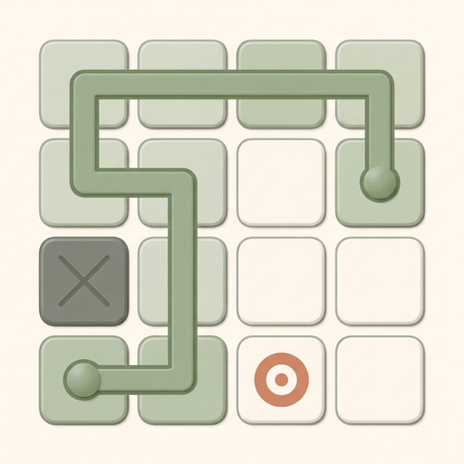

A single-line puzzle
OneStroke
Connect the dots in one stroke. OneStroke is a free mobile puzzle game by JustinLin.
Support
For questions about OneStroke, contact l545115382@gmail.com.

A single-line puzzle
Connect the dots in one stroke. OneStroke is a free mobile puzzle game by JustinLin.
For questions about OneStroke, contact l545115382@gmail.com.